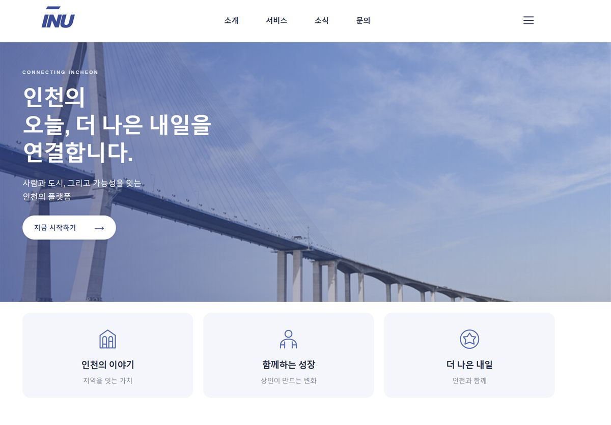
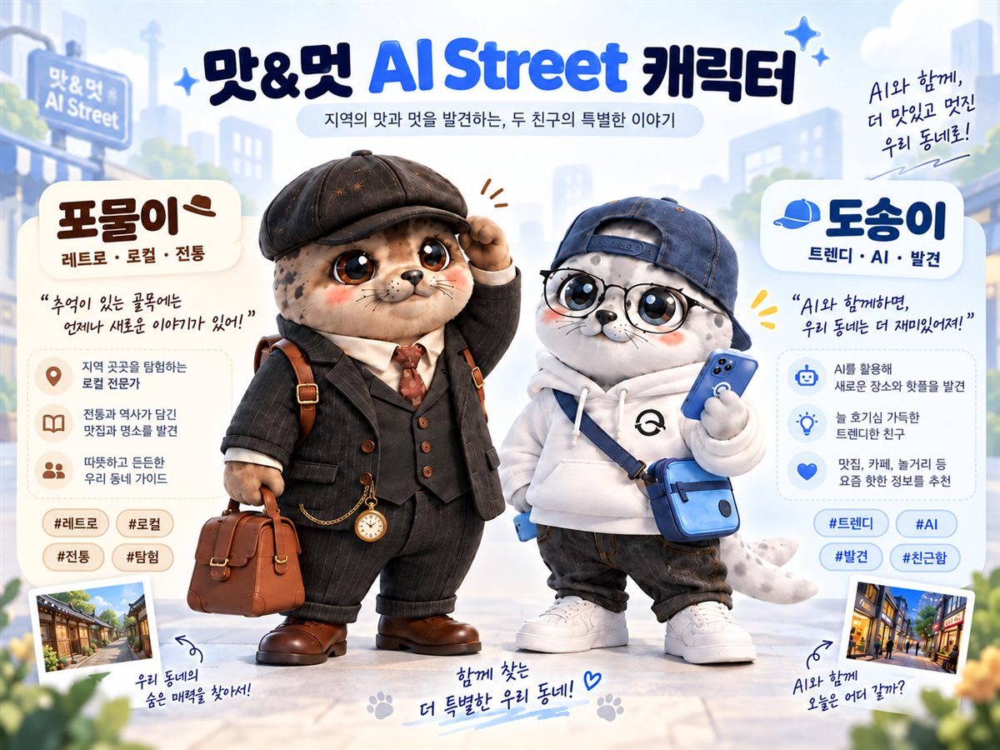

공모전 출품 모음
만드는 일 말고, 기획하고 설득하는 일도 해 보고 있다.
지역상권 활성화 AI 공모전 · 최우수상
인천대학교 글로벌정경대학 제1회 페스티벌의 송도·제물포 캠퍼스 인근 지역상권 활성화 AI 공모전에 나가 최우수상(인천연구원장상)을 받았다.
먼저 대상 상권을 직접 걸으며 가게와 거리 사진을 찍고, 위성지도와 일반지도로 동선과 층 구성을 정리했다. 지역 상권 추진 전략 자료를 읽고 참가신청서를 쓴 뒤, 아이디어를 말로만 설명하지 않으려고 실제로 눌러 볼 수 있는 웹 ITDA(맛&멋 AI Street)를 만들었다. 메인·손님·점주·관리자 화면을 따로 두고, 화면 색과 요약 자료까지 직접 만들었다.

상권을 소개할 캐릭터도 기획했다. 레트로한 골목을 안내하는 ‘포물이’와 AI로 요즘 핫플을 찾아 주는 ‘도송이’ 두 친구다. 이름은 제물포와 송도에서 따왔다.

웹을 만든 과정은 ITDA 작업 기록에 따로 정리했다.
전공 경험 성찰 공모전 · A0 포스터
행정학과에서 겪은 세 현장을 한 장의 A0 포스터로 정리했다. 제목은 ‘나의 행정학, 세 가지 현장에서 배우다’. 학생회 기획부에서 행사를 준비하며 참여 절차와 운영 조건을 고민한 일, 파리 진로세미나에서 현지 학생 지원 기관을 찾아가 유학생 지원 방식을 물었던 일, 그리고 위의 지역상권 공모전을 각각 한 단씩 맡겼다.
참가신청서부터 냈고, 기획 초안 → 준비 일정 → 자료 검토와 주제 선정 → 원고 → 세 파트 구성 → 공모 주제 반영 → 인쇄 규격 → 신청서 답변까지 여덟 단계 문서로 나눠 작업했다. 각 파트는 ‘전공 관련 질문 → 내가 한 일 → 전공을 새롭게 이해한 점’ 같은 순서로 맞췄고, A0 크기(841×1189mm) 인쇄용 PDF와 수정용 PPTX로 최종본을 완성했다.
학교 웹사이트 버그 찾기 챌린지
학교 학사 포털의 버그를 찾는 챌린지에 참여했다. 화면 배율을 80%로 줄이면 배치가 깨지는 문제, 검색창에 글자 수를 넘기거나 특수문자를 넣었을 때의 결과, 검색과 상관없는 글이 나오는 문제, 조회수가 오르지 않는 장학금 카테고리, 모바일 화면 문제, 브라우저 보안 설정에 따라 저장소 접근이 막히며 생기는 콘솔 에러까지 아홉 가지를 캡처와 녹화 영상으로 남겼다. 개발할 때 늘 찾던 것을 반대편에서 찾아보는 경험이었다.
캡처에는 로그인한 계정 정보가 함께 찍혀 있어 여기에는 싣지 않는다.
통학 버스 홍보 문구 디자인
학교 통학 버스 ‘유니버스(UNI-BUS)’의 홍보 문구 디자인 공모에 냈다. “당신의 아침을 열고 밤을 닫는 곳, 언제나 유니 곁에 유니버스”라는 문구와 “Always You Near”라는 영문 부제를 붙이고, AI 이미지 도구로 배너 시안을 만들어 다듬었다.
교통 앱 아이디어 · 지하철 네비게이터
교통 앱 아이디어 공모에는 나침반으로 하차 방향을 알려 주고 칸마다 맞춤 정보를 보여 주는 ‘지하철 네비게이터’를 기획서로 냈다. 직접 만든 내리는 문에서 시작한 아이디어를, 앱 서비스의 기능으로 다시 풀어 쓴 것이다.